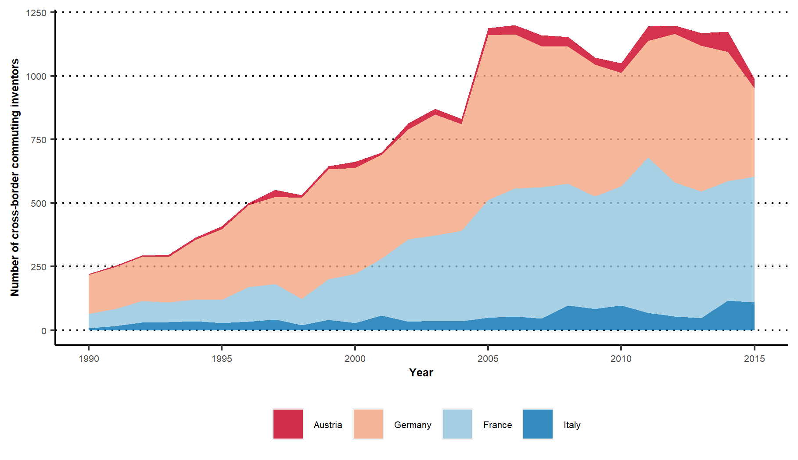
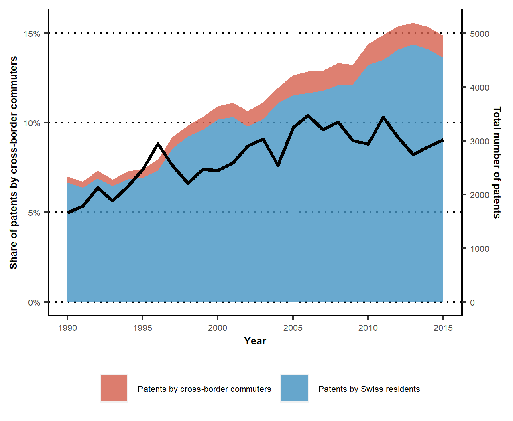

Cross-border commuting and inventions ‘Made in Switzerland’
September 2020 by Matthias Niggli, Christian Rutzer and Dragan Filimonovic

Picture: Barry Davis | Flickr
Over 300 000 people from neighboring countries regularly cross the border to work in Switzerland. Many of them contribute substantially to the development of new innovations by Swiss companies. At the same time, the work of cross-border commuting inventors is often not properly considered by standard innovation measures. As a result, the Swiss economy could be even more innovative than generally thought. In fact, innovative activity in Switzerland could be underestimated by around 10% for the country as a whole - and by up to 30% for some specific regions and industries.
Cross-border commuters are important for the Swiss economy. This is especially the case for some Swiss regions and the industries they are specialized in. For example, the most recent figures of the Swiss Federal Statistic Office highlight that the Lake Geneva region together with the region of Northwestern Switzerland already attract almost 200 000 cross-border commuters.
But despite their relatively large number, cross-border workers in Switzerland are very unlikely to have a negative impact on domestic workers. In a very recent research paper, Beerli, Ruffner, Siegenthaler & Peri (2020) argue that liberalizations of cross-border commuting restrictions in Switzerland have in fact fostered the development of new innovations by Swiss companies in border regions. Simultaneously, this increase in inventive activity has stimulated labor market opportunities and raised labor demand for domestic workers. As a result, cross-border commuters have neither caused downward pressure on Swiss wages nor reduced employment of either higher or lower educated domestic workers. On the contrary, this liberalization has even increased the wages of high-skilled workers. In general, these findings are in line with other studies suggesting that Switzerland benefits from cross-border workers and immigration as such (see for example Avenir Suisse, 2020, for an overview or Salvi, 2014, for a short case study).
What often remains unclear, though, is the extent to which cross-border workers contribute to Switzerland’s innovation landscape. This is what we want to discuss in this article. We will argue that cross-border commuters contribute substantially to new inventions made in Switzerland. And since standard innovation measures typically do not take this into account, they tend to substantially underestimate Switzerland’s innovative output.
How to determine the origin of an invention
Every year, reports such as the Global Innovation Index, the Global Competitiveness Report or the World Intellectual Property Report evaluate the innovative capacity of countries and find attention in politics and the media (e.g. NZZ, 9.10.2019; SRF, 17.10.2018). These studies typically use patents as one of the measures for innovation. More precisely, they look at the number of patents filed by inventors of a given country. This number can be derived because a patent documentation always states the residence countries of all inventors, as you can see in the following example.

This patent states nine different “Inventors”. Five are from Germany and four are from Switzerland. The German locations (mostly from the area of Karlsruhe) and the Swiss ones (from the area around Bern) are rather far away from each other. This suggests that two different labs collaborated for this discovery and not all of the inventors worked in the same place. Some of the research was probably conducted in Germany and some in Switzerland. In such a case, there are several possibilities to link a patent to countries. One option is to assign it to both countries as one additional patent. Another option is to proportionally divide the patent among the countries according to the share of inventors from each country. With the first option, our example patent would be equally assigned to Germany and Switzerland. With the latter one, 5/9 of the patent would be assigned to Germany and 4/9 to Switzerland. This approach takes into account the larger share of German compared to Swiss residents in the development of the patent.
A large number of patents may not be assigned to Switzerland even though all the research and development was conducted in a company’s Swiss-based facility.
A third option would be to consider the location of the company that owns the patent, instead of focusing on its inventors. In our example, this is the location of the patent’s “Assignee”. In this case, the patent is owned by selFrag AG from Kerzers, Switzerland and would therefore be attributed to Switzerland only. Because of this - and also because patents are sometimes filed by foreign subsidiaries or headquarters - company addresses are rarely used to determine patent origins. For more information on how to determine the origin of patents, see e.g. Bechthold & de Rassenfosse (2019) or a recent report by Bertelsmann (p. 68) that briefly and comprehensively discusses the pros and cons of different options. The optimal choice depends mostly on the question one wants to answer. In this article, we want to investigate Switzerland’s innovation output. For this purpose, it is best to follow the most common approach, which is to look at inventor addresses and to use shares to assign patents to countries.
Now, for the case of Switzerland, recall the very high numbers of cross-border commuters to Geneva or Basel, for example. What if all the inventors of a patent developed in Switzerland live in neighboring countries and commute to a workplace in Switzerland? In this case, the patent documentation shows no connection to Switzerland. Consequently, many patents may not be assigned to Switzerland even though all the research and development was conducted in a company’s Swiss-based facility. Nor would focusing on the location of the firm solve the problem if the patent was filed by a foreign affiliate of the Swiss-based firm. The image below shows an example of a patent with exactly these characteristics.

All the inventors of this patent live in Germany or France and the assignee of the patent is a U.S.-affiliate of Swiss pharmaceutical giant, Hoffmann-La Roche. With the above-mentioned approaches, such a patent would never be attributed to Switzerland. However, the places of residence of all inventors are very close to the region of Basel (e.g. Grenzach-Wylen, Freiburg). Furthermore, Hoffmann-La Roche’s headquarters is located in Basel and some of its major research facilities are in this region. At the same time, Hoffmann-La Roche has no German research sites close to either Freiburg or Grenzach-Wylen according to publicly available information by the company. Therefore, it is very likely that this patent was in fact developed in Basel by cross-border commuters from Germany and France and later filed at the United States Patent and Trademark Office (USPTO) by a U.S. branch of Hoffmann-La Roche. The actual invention, however, was conducted in Switzerland and the patent should thus also be attributed to Switzerland. To ensure this, we need to identify cross-border commuters in the patent data. In the textbox below, you find a description of how we do this.
Searching for cross-border commuting inventors in Switzerland
Click here to read about our empirical approach
The patent data we use for the first step of the analysis is from the USPTO. It covers the period 1990 to 2015 and is corrected for patent equivalents (for more information on patent equivalents, see e.g. Webb, Dernis, Harhoff and Hoisl, 2005). This dataset features information on the resident countries of inventors and companies. Furthermore, it also contains the geographical coordinates of their resident addresses. Moreover, to assign patents to a year, we use the so-called priority year. The priority year indicates the year a patent was first filed at a patent office anywhere in the world. This date comes closest to the real time of the invention. Therefore, it is often used when analyzing innovation activities by means of patent statistics (for more information, see e.g. OECD, 2008). However, since it takes time between the filing and publishing of a patent, the priority date trails behind the publication date of patents. Thus, in order to present a comprehensive picture of inventor activity, we limit ourselves to showing only patents up to the priority year 2015. Combining these pieces of information allows us to develop an approach to empirically identify cross-border commuting inventors in Switzerland.
In principle, a patent is a candidate for being (co-)invented by a cross-border commuter if the inventor’s resident country is not Switzerland, but the company that owns the patent is based in Switzerland. If more than one company has been involved in the development of the patent and these companies are located in different countries, we have to link inventors to companies. We do this by matching inventors to the company that is most closely located to their resident addresses. Of course, however, this would be way too broad for a definition of cross-border commuting inventors in Switzerland. Recall, for example, our first example patent: The company was based in Switzerland and several inventors were living in Germany. As outlined above, this does not mean that they are necessarily cross-border commuters. For example, one of the German inventors lived in Hamburg and commuting over such a large distance to Switzerland is almost impossible.
Therefore, we need to refine the general approach. In order to do this, we introduce a limit on the distance between company and inventor locations. We choose a threshold value so that the difference between the latitude and longitude of the company and the inventor cannot be greater than about 100 kilometers. If the distance is too large, we consider commuting impossible. To calculate distances, we use the coordinates of inventor and company residence addresses. We then assign the cross-border commuter status if
- inventors are not living in Switzerland and
- the company that owns the patent is based in Switzerland and
- inventors are not living too far away from the location of the Swiss company.
Consequently, an inventor who is mentioned on a patent filed by a Basel-based company but is living in Hamburg would not be considered a cross-border commuter. In turn, an inventor living in Lörrach would. Patents that were (co-)invented by such inventors then get reassigned to Switzerland.
However, this might still miss some cross-border commuters. What if the Swiss company did file the patent through a foreign affiliate, as in our second example? A solution is to find all firms that have a significant number of patents that can be clearly attributed to Switzerland (i.e. both the inventors and the company are located in Switzerland). Such a list allows us to derive which firms have a research facility in Switzerland. This then allows us to link foreign affiliates to Swiss research sites. Moreover, it is then also possible to derive the geographical coordinates of each research facility.
We then assign the cross-border commuter status to further patents if
- inventors are not living in Switzerland and
- the company’s affiliate that files the patent is not located in Switzerland or in the country where the inventor is from and
- the company that owns the patent has a Swiss-sited research location and
- inventors are not living too far away from the company’s Swiss-sited research location.
Up to now, we have not included European Patent Office (EPO) patents in our analysis, which could be a major shortcoming. The reason is that data on EPO patents, which have been made available by the OECD, does not have geographical coordinate information. Therefore, we need an alternative approach to also check for cross-border commuters on EPO patents. We proceed in the following way: First, because we have already reassigned USPTO patents, we consider only EPO patents from Swiss-based companies that do not have an equivalent USPTO patent. As before, we then check if the resident country of the company that owns the patent is Switzerland, but the inventor lives somewhere else. As before, we must then consider whether the locations of the inventor and the company are not too far away. Instead of coordinates, we now use the resident regions of inventors and companies. More precisely, we assume that commuting to a workplace in Switzerland is only possible for inventors from foreign regions that are close to the Swiss border. We define these regions to be “Freiburg” and “Schwaben” for Germans, “Alsace”, “Rhône-Alpes”, “Lorraine” and “Franche-Comté” for people from France, “Lombardy” and “Piedmont” for Italians and the region of “Vorarlberg” for Austrians. We exclude inventors who live outside of these regions as potential cross-border commuters, because the distance to the Swiss border would be too far. Furthermore, we make additional restrictions that inventors from Germany only commute to the Swiss regions of “Northwestern Switzerland”, “Zürich” or “Eastern Switzerland”, Italians only to “Ticino”, Austrians only to “Eastern Switzerland” and French commuters only to “Northwestern Switzerland” or to the “Lake Geneva Region”.
To summarize, we assign the cross-border commuter status to EPO patent inventors only if
- inventors are not living in Switzerland but in regions close to its borders and
- the company that owns the patent is based in Switzerland and
- the company is located in a Swiss region which is close to the foreign region where the inventor lives.
Cross-border commuters and innovation in Switzerland
We can now investigate the number of inventions by cross-border commuters in Switzerland. For this analysis, we use patent data from the USPTO for U.S. patents and from the OECD for European patents.
Let us start by focusing on the number of inventors who commute to a Swiss workplace from neighboring countries. The figure below shows the absolute number of cross-border commuting inventors differentiated by country of origin.
Origin of cross-border commuters
 Source: CIEBs’ own estimations based on data from the USPTO and the OECD. The data used for this plot is available on GitHub.
At the beginning of the 1990s, there were relatively few cross-border commuting inventors – most of them commuted from Germany to Switzerland. However, until 2005 their number has increased to a combined total of over 1000 people for all neighboring countries. This fits nicely with the findings of Beerli, Ruffner, Siegenthaler & Peri (2020). According to these authors, the inflows of cross-border workers to Swiss border regions increased substantially following liberalizations at the beginning of the 21st century. Based on survey data, they point out that this additional inflow was especially relevant for research and development activities. Although it is important to note that we do not investigate any causal effects of the mentioned liberalizations, using patent data to identify cross-border commuting inventors seems to at least support this finding. Even more importantly, not considering all these cross-border commuting inventors and their corresponding patents could result in a substantial underreporting of Switzerland’s innovative output.
The extent of this bias can be seen in the next plot.
Cross-border commuters in Switzerland
 Source: CIEBs’ own estimations based on data from the USPTO and the OECD. The data used for this plot is available on GitHub.
Focus on the colored areas first. They show the absolute number of patents invented by Swiss residents (blue) and cross-border commuters (red), respectively. Patents have increased over time for both Swiss residents and cross-border commuters alike (for a general overview of the patenting in Switzerland see Arvanitis et al., 2015). Also, we can immediately see that Switzerland’s patent output is clearly higher when also considering cross-border commuting inventors. The black solid line states the share of patents that were invented by cross-border commuters (i.e. the share of the red area). It is quite impressive. As early as 1990 around 5% of all patents developed in Switzerland were inventions by cross-border commuters. This share doubled to around 10% in 2005 and has remained relatively stable ever since.
What do these findings imply? First and foremost, it means that Swiss innovative activity could be underestimated by around 10% if the work of cross-border commuting inventors is not considered. Second, as the share of patents by cross-border commuters has not increased for the last 10 years, it seems unlikely that cross-border commuters have substituted domestic inventors.
Swiss innovative activity could be underestimated by around 10% if the work of cross-border commuters is not considered.
Instead, patenting by both Swiss residents and cross-border commuters has grown rapidly, suggesting that the Swiss economy benefits substantially from cross-border commuting inventors. This is again consistent with the results of Beerli, Ruffner, Siegenthaler & Peri (2020). Having more cross-border commuting inventors has gone hand in hand with more patents filed by both Swiss residents and commuters. This again supports the argument that Switzerland’s innovative output could indeed have greatly benefited from the additional inflow of cross-border commuting inventors.
Cross-border commuters seem to substantially fuel the innovative engine of the Swiss economy. But this could even be more apparent for some specific regions and industries. The graph below allows you to examine this further for yourself. You can choose a Swiss region (as defined by the OECD) or a technology field (as defined by the WIPO) and the graph displays patent counts and the share of patents invented by cross-border commuters for your selected region or technology field.
Cross-border commuters in Swiss regions and industries
Source: CIEBs’ own estimations based on data from the USPTO and the OECD. The data used for this plot is available on GitHub.
Cross-border commuters seem to substantially fuel the innovative engine of the Swiss economy.
There are nonetheless some cross-border commuters registered in the non-border region of Central Switzerland (covering the cantons Luzern, Uri, Schwyz, Zug, Nidwalden and Obwalden). The most likely reasons for this are that these inventors were either not cross-border commuters in a legal sense (e.g. they were Swiss residents but also had a foreign address which they stated on the patent documentation) or the patent was only filed by a company headquarters in Central Switzerland, whereas the actual research was conducted in a lab in the border region.
The share of patents by cross-border commuters varies from only around 0.5-1% in Espace Mittelland to a maximum of nearly 30% in the border regions of Northwestern Switzerland and Ticino. The same is true for different technology fields. “16 Pharmaceuticals”, which is the most important export sector of the Swiss economy, has also by far the highest share of patents developed by cross-border commuting inventors (up to over 30%). Similarly, many other fields related to chemistry and biology also have relatively high shares. For both fields, this is most likely because Basel is the location of Switzerland’s most important pharmaceutical and chemistry cluster.
Another interesting observation is the increasing number of patents by cross-border commuting inventors over time in booming fields such as “4 Digital communication”, “6 Computer technology”, “24 Environmental technology” or “13 Medical technology”. Thus, being able to recruit cross-border commuters is particularly important in several dynamic and emerging technology fields.
Open borders are key for high-quality innovations in Switzerland.
All of these findings indicate that open borders are key for high-quality innovations in Switzerland. Without having the possibility to recruit cross-border commuting researchers and developers, Switzerland’s overall patent output could be significantly lower. Besides cross-border workers, Switzerland also employs a high number of high-skilled immigrants. If the Swiss economy could no longer benefit from the knowledge of all of these foreign workers, its innovative capacity would most likely deteriorate severely. This would be particularly alarming as cross-border commuting inventors seem to be especially important in highly dynamic technology fields such as computer science, biotechnology, pharmaceuticals or environmental technologies.
Interested in a comparison of Swiss pharma with other countries? Then check out our analysis The pharmaceutical industry: a driver of innovation and growth in Switzerland.
This report was written using R Markdown and R shiny. Calculations to identify cross-border commuting patent inventors were performed at sciCORE scientific computing center at the University of Basel. Data and code to reproduce the figures presented in this article are available on GitHub.
Center for International Economics and Business | CIEB | University of Basel